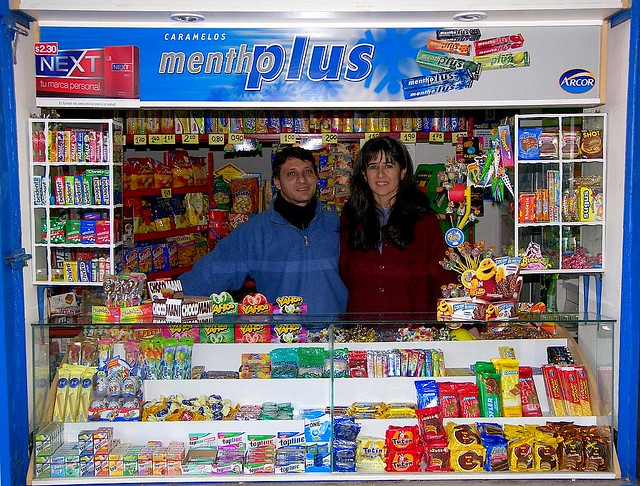

Unser Kioskbetreiber, Herr Müller, begrüßt Sie stets mit einem Lächeln. Seine freundliche Art und sein Fachwissen machen Ihren Besuch zu einem angenehmen Erlebnis. Bei uns finden Sie nicht nur Ihre Lieblingsprodukte, sondern auch eine herzliche Atmosphäre. Besuchen Sie uns und erleben Sie selbst die nette Seite unseres Kiosks!